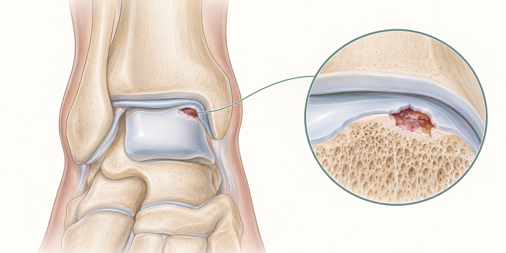
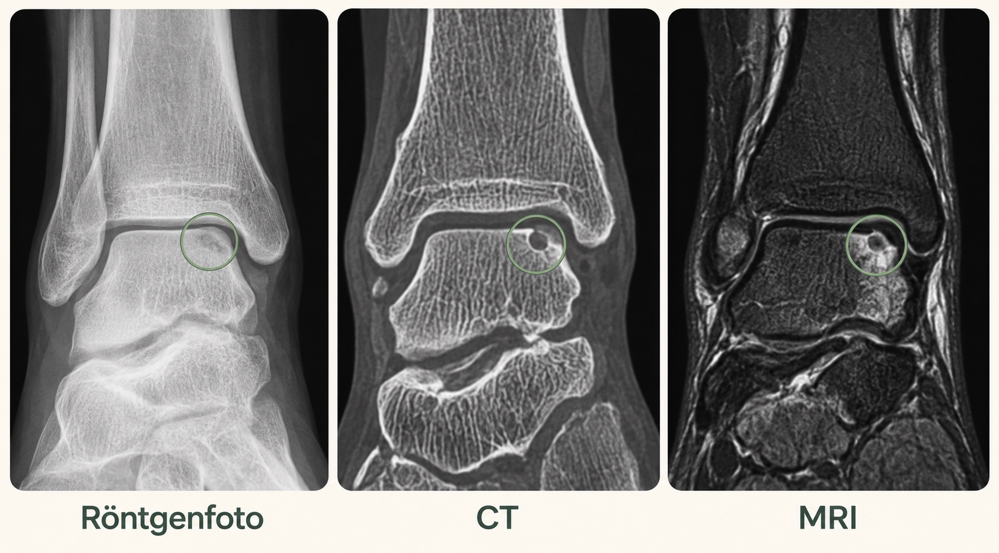
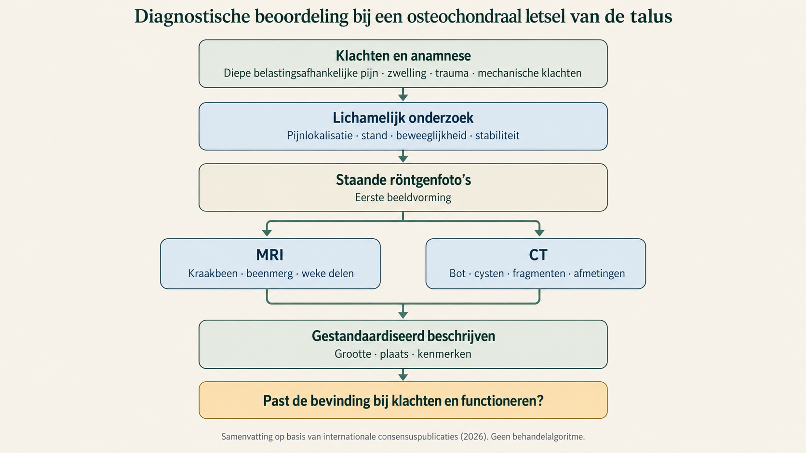

Onderzoek en duiding
Kraakbeenletsel van de enkel: nieuwe consensus over diagnostiek
In september 2026 verschenen twee internationale consensuspublicaties over de diagnostiek van een osteochondraal letsel van de talus (OLT), vaak aangeduid als kraakbeenletsel van de enkel. Ze beschrijven de rol van klachten, lichamelijk onderzoek, staande röntgenfoto's, MRI en CT.
Een osteochondraal letsel van de talus betreft het kraakbeen van het sprongbeen en het bot direct daaronder. Het letsel kan ontstaan na een enkelverzwikking of ander trauma, maar wordt soms pas later gevonden wanneer diepe pijn, zwelling na belasting of haperende klachten blijven bestaan.
De nieuwe publicaties bundelen uitkomsten van internationale consensusbijeenkomsten over kraakbeenherstel van de enkel. Het gaat niet om een onderzoek waarin patiënten één behandeling kregen en daarna werden gevolgd. Een groot panel van voet-enkelchirurgen, radiologen en andere deskundigen beoordeelde beschikbare literatuur en stemde volgens een vaste Delphi-methode over terminologie, onderzoek en beeldvorming.[1,2]
Klachten en lichamelijk onderzoek bij osteochondraal letsel van de talus
In de publicatie over klachten en onderzoek wordt diepe enkelpijn bij belasting, met of zonder zwelling, genoemd als het belangrijkste klinische kenmerk dat aan een symptomatisch kraakbeen-botletsel kan doen denken. Ook het verloop na een trauma, mechanische klachten zoals haperen, eerdere behandeling, stabiliteit, stand en beweeglijkheid horen bij de beoordeling.[1]
Dat zijn geen losse criteria waarmee de diagnose kan worden afgevinkt. Dezelfde klachten kunnen ook voorkomen bij enkelinstabiliteit, impingement, peesproblemen, beginnende artrose of een los fragment in het gewricht. Omgekeerd kan beeldvorming een osteochondrale afwijking laten zien die niet alle klachten verklaart.
De consensus helpt daarom vooral om de klinische vraag scherper te formuleren. Waar zit de pijn? Wanneer ontstaat de zwelling? Is er werkelijk sprake van blokkeren of vooral van pijn en onzekerheid? Past de gevonden afwijking bij het verhaal en het onderzoek? Die volgorde voorkomt dat één opvallend MRI-beeld de hele beoordeling gaat bepalen.
Röntgenfoto, MRI en CT bij kraakbeenletsel van de enkel
De tweede publicatie beschrijft negentien consensusuitspraken over diagnostiek en beeldvorming. De basis begint met staande röntgenfoto's. Die geven informatie over bot, gewrichtsspleet, stand en eventuele artrose terwijl de enkel wordt belast. MRI en CT worden aanvullend gebruikt om het letsel verder te karakteriseren.[2]

MRI laat vooral kraakbeen, beenmergreactie en omliggende weke delen zien. CT geeft meer detail over het bot, bijvoorbeeld over een cyste, de begrenzing van een defect of een los fragment. Het panel adviseert om grootte, diepte en plaats van een letsel gestandaardiseerd vast te leggen. Dat is relevant voor communicatie tussen behandelaars en voor vergelijking van onderzoek.
De scan laat niet altijd zien hoeveel pijn of beperkingen iemand heeft. Volgens de consensuspublicatie hangen bevindingen op scans na behandeling maar beperkt samen met pijn en functioneren. Een technisch fraai beeld is dus geen vervanging voor een patiëntrelevante uitkomst. Het omgekeerde geldt ook: iemand kan klinisch verbeteren zonder dat ieder beeldvormend kenmerk normaliseert.
Beeldvorming, artroscopie en behandelkeuze
De publicaties gaan over beoordeling en verslaglegging, niet over de vraag welke operatie bij welk letsel beter is. Grootte, diepte, cystevorming en stabiliteit kunnen een behandelkeuze beïnvloeden, maar staan niet los van leeftijd, belasting, klachten, eerdere behandeling, enkelstabiliteit en stand.
Met goede MRI- en CT-beelden is een kijkoperatie meestal niet nodig om alleen vast te stellen waar het letsel zit en hoe groot het is. Een artroscopie kan wel onderdeel zijn van een operatie waarbij het letsel direct wordt beoordeeld en behandeld.
De consensus voegt geen nieuwe scan of classificatie toe. De waarde zit vooral in de volgorde: eerst klachten en functioneren beoordelen, daarna gericht beeldvorming kiezen en vervolgens nagaan of de bevindingen daarbij passen. Een afwijking op de scan is bij kraakbeenletsel van de enkel niet automatisch de verklaring voor de klachten.

Bronnen
- Tham A, Butler JJ, Rubin J, et al. History, Physical Examination, and Terminology of Osteochondral Lesions of the Talus: Proceedings of the International Congress on Cartilage Repair of the Ankle. Foot Ankle Spec. Online gepubliceerd 17 september 2026. DOI: 10.1177/19386400261485355.
- Tham A, Rubin J, Butler JJ, et al. Clinical Work-up, Diagnostic Imaging, and Radiographic Classification Systems for Osteochondral Lesions of the Talus: Proceedings of the International Consensus Meetings on Cartilage Repair of the Ankle. Foot Ankle Spec. Online gepubliceerd 8 september 2026. DOI: 10.1177/19386400261478702.
Lees de volledige artikelen: klachten, onderzoek en terminologie en diagnostiek en beeldvorming. Voor de volledige tekst is soms toegang via een instelling of abonnement nodig.